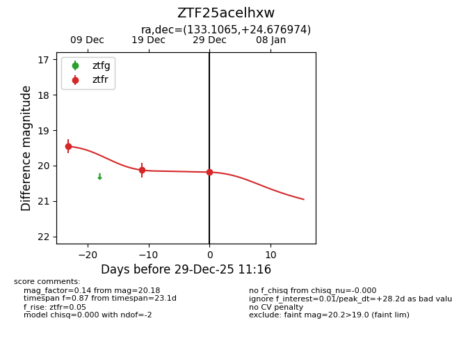
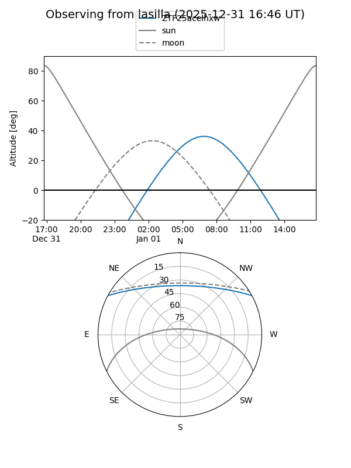
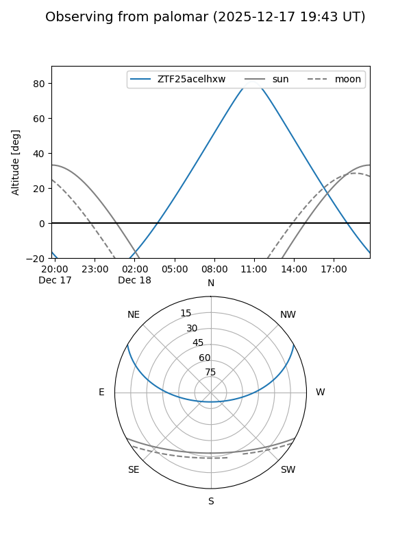
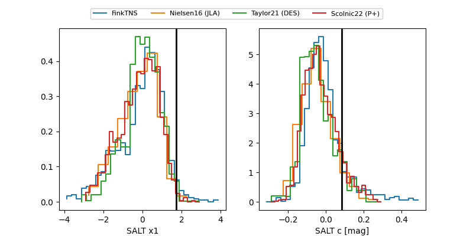

ZTF25acelhxw
Target ZTF25acelhxw at 2025-12-31 16:59
Aliases and brokers:
FINK:
Lasair:
ALeRCE:
alt names
ZTF25acelhxw (ztf,fink_ztf)
Coordinates:
equatorial (ra, dec) = 133.1065,+24.67697
equatorial (HMS+DMS) = 08:52:25.55,+24:40:37.11
galactic (l, b) = (201.2112,+36.70856)
Flags:
Photometry:
last ztfr=20.18
3 ztfr detections
Lightcurve

Visibility


Additional plots
